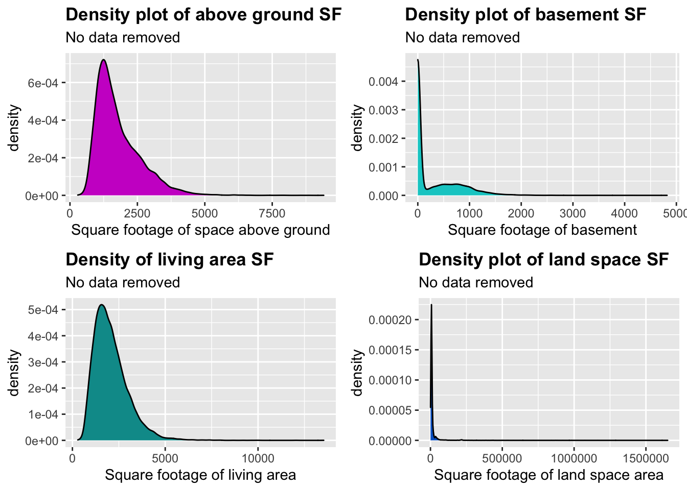
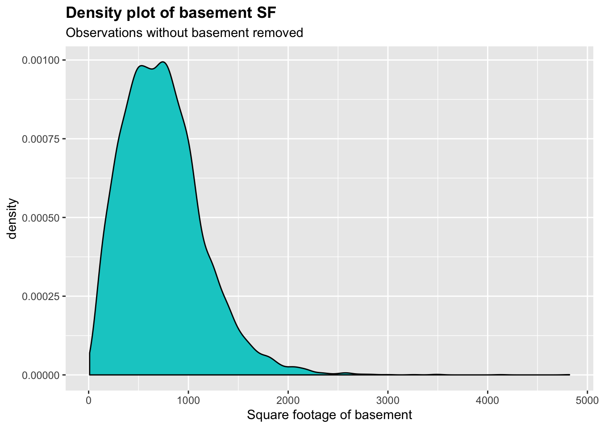
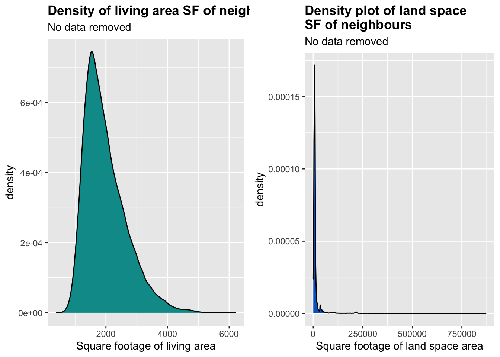

I am an economics student at the University of Bristol and I have created this project to practice and display some of the skills I have learned in my first year econometrics classes. I will be using a dataset to infer how the prices of houses in King County, USA. have been generated.
#import libraries
#
library(tidyverse)
library(gridExtra)
library(corrplot)
library(RColorBrewer)
library(stargazer)
library(usdm)##load in data
#
house <- read_csv("kc_house_data.csv")
glimpse(house)## Observations: 21,613
## Variables: 21
## $ id <chr> "7129300520", "6414100192", "5631500400", "2487200…
## $ date <dttm> 2014-10-13, 2014-12-09, 2015-02-25, 2014-12-09, 2…
## $ price <dbl> 221900, 538000, 180000, 604000, 510000, 1225000, 2…
## $ bedrooms <dbl> 3, 3, 2, 4, 3, 4, 3, 3, 3, 3, 3, 2, 3, 3, 5, 4, 3,…
## $ bathrooms <dbl> 1.00, 2.25, 1.00, 3.00, 2.00, 4.50, 2.25, 1.50, 1.…
## $ sqft_living <dbl> 1180, 2570, 770, 1960, 1680, 5420, 1715, 1060, 178…
## $ sqft_lot <dbl> 5650, 7242, 10000, 5000, 8080, 101930, 6819, 9711,…
## $ floors <dbl> 1.0, 2.0, 1.0, 1.0, 1.0, 1.0, 2.0, 1.0, 1.0, 2.0, …
## $ waterfront <dbl> 0, 0, 0, 0, 0, 0, 0, 0, 0, 0, 0, 0, 0, 0, 0, 0, 0,…
## $ view <dbl> 0, 0, 0, 0, 0, 0, 0, 0, 0, 0, 0, 0, 0, 0, 0, 3, 0,…
## $ condition <dbl> 3, 3, 3, 5, 3, 3, 3, 3, 3, 3, 3, 4, 4, 4, 3, 3, 3,…
## $ grade <dbl> 7, 7, 6, 7, 8, 11, 7, 7, 7, 7, 8, 7, 7, 7, 7, 9, 7…
## $ sqft_above <dbl> 1180, 2170, 770, 1050, 1680, 3890, 1715, 1060, 105…
## $ sqft_basement <dbl> 0, 400, 0, 910, 0, 1530, 0, 0, 730, 0, 1700, 300, …
## $ yr_built <dbl> 1955, 1951, 1933, 1965, 1987, 2001, 1995, 1963, 19…
## $ yr_renovated <dbl> 0, 1991, 0, 0, 0, 0, 0, 0, 0, 0, 0, 0, 0, 0, 0, 0,…
## $ zipcode <dbl> 98178, 98125, 98028, 98136, 98074, 98053, 98003, 9…
## $ lat <dbl> 47.5112, 47.7210, 47.7379, 47.5208, 47.6168, 47.65…
## $ long <dbl> -122.257, -122.319, -122.233, -122.393, -122.045, …
## $ sqft_living15 <dbl> 1340, 1690, 2720, 1360, 1800, 4760, 2238, 1650, 17…
## $ sqft_lot15 <dbl> 5650, 7639, 8062, 5000, 7503, 101930, 6819, 9711, …We can see that the dataset has 21 variables and 21,613 observations. Most of the variable names are self explanotary (i.e. bedrooms and bathrooms) but some data, such as those presumably measuring square footage, are not so clear.
From looking at the metadata of the dataset, I found that: sqft_lot measures the square footage of the land space; sqft_living measures the square footage of interior living space; sqft_above measures interior housing space that is above ground level and all variables with 15 at the end are those measurements from the 15 nearest neighbours to the house.
Before proceeding to look anymore at the data I will check to see if there are any NA values in the data.
#check variables for NA values
#
for(x in 1:ncol(house)){
naTable = table(is.na(house[[x]]))
if(!is.na(naTable[2])){
print(colnames(house)[x])
}
} Since no column names were returned I will start to look at the distribution of the variables.
#look at distribution of dependent variable
#
house%>%ggplot(aes(x = price)) +
geom_density(fill = "#66CC00") +
labs(x = "Price", y = "Density", title = "Density plot of price",
subtitle = "No data removed") +
theme(plot.title = element_text(face = "bold"))#density of square footage of house variables
#
sqftLivingDensity <- house%>%ggplot(aes(x = sqft_living)) +
geom_density(fill = "009999") +
labs(x = "Square footage of living area", title = "Density of living area SF",
subtitle = "No data removed") +
theme(plot.title = element_text(face = "bold"))
sqftLotDensity <- house%>%ggplot(aes(x = sqft_lot)) +
geom_density(fill = "#0066CC") +
labs(x = "Square footage of land space area", title = "Density plot of land space SF",
subtitle = "No data removed") +
theme(plot.title = element_text(face = "bold"))
sqftAbvDensity <- house%>%ggplot(aes(x = sqft_above)) +
geom_density(fill = "#CC00CC") +
labs(x = "Square footage of space above ground", title = "Density plot of above ground SF variable",
subtitle = "No data removed") +
theme(plot.title = element_text(face = "bold"))
sqftBsmtDensity <- house%>%ggplot(aes(x = sqft_basement)) +
geom_density(fill = "#00CCCC") +
labs(x = "Square footage of basement", title = "Density plot of basement SF",
subtitle = "No data removed") +
theme(plot.title = element_text(face = "bold"))
grid.arrange(sqftAbvDensity, sqftBsmtDensity, sqftLivingDensity, sqftLotDensity, ncol = 2)
The density plot for the square footage of the basement looks odd, this is most likely caused by a measurement of 0 for houses without a basement. After a closer look I discovered that there were observations without a basement.
After removing the observations without a basement the density plot looks like this.
house%>%filter(sqft_basement > 0)%>%
ggplot(aes(x = sqft_basement)) +
geom_density(fill = "#00CCCC") +
labs(x = "Square footage of basement", title = "Density plot of basement SF",
subtitle = "Observations without basement removed") +
theme(plot.title = element_text(face = "bold"))
Since the square footage of the basement contains 0 values I would not be able to perform a log transformation to the skewed distribution. Also there is a good chance that this variable will be correlated with other square footage variables in the dataset which would cause problems in the regression, so I will drop it.
However, I will try to capture some of the variance by creating a dummy variable indicating whether the house has a basement or not.
house <- house%>%mutate(bsmt = ifelse(sqft_basement > 0, 1, 0))
house$sqft_basement <- NULLI suspect that because not all houses will be renovated so a similar approach can be taken with the variable yr_renovated.
I found that 95.77% of the observations have not been renovated and have a 0 value for this variable.
house <- house%>%mutate(renovated = ifelse(yr_renovated == 0, 0, 1))
house$yr_renovated <- NULLFrom looking at this newly created variable we can see that houses that have been renovated are on average more expensive than those that have not.
house%>%group_by(renovated)%>%
summarise(avePrice = mean(price))%>%
ggplot(aes(x = as.factor(renovated), y = avePrice, fill = as.factor(renovated))) +
geom_bar(stat = "identity") +
scale_fill_manual(values = c("#00CCCC", "#0066CC")) +
labs(x = "Renovated", y = "Mean price",
title = "Price difference of houses
that have been renovated") +
theme(legend.position = "none",
plot.title = element_text(face = "bold", size = 20))Now I will look at the density plots of the square footage of the nearest 15 neighbours to see if it follows a similar trend.
#density of square footage of nearest 15 houses
#
sqftLiving15Density <- house%>%ggplot(aes(x = sqft_living15)) +
geom_density(fill = "009999") +
labs(x = "Square footage of living area",
title = "Density plot of living area
SF of neighbours",
subtitle = "No data removed") +
theme(plot.title = element_text(face = "bold"))
sqftLot15Density <- house%>%ggplot(aes(x = sqft_lot15)) +
geom_density(fill = "#0066CC") +
labs(x = "Square footage of land space area",
title = "Density plot of land space
SF of neighbours",
subtitle = "No data removed") +
theme(plot.title = element_text(face = "bold"))
grid.arrange(sqftLiving15Density, sqftLot15Density, ncol = 2) 
Looks like these variables follow the same right skewed distribution as the other square footage variables.
I am going to drop the date variable as well as longitude and latitude variable.
I think that I may be able to derive a variable that measures the price of houses in different areas, I will look into this by examining the zipcodes of the houses.
#drop date, long and lat
#
house$date <- NULL
house[, c("long", "lat")] <- NULL
house%>%ggplot(aes(x = as.factor(reorder(zipcode, price, FUN = median)), y = price)) +
geom_boxplot(colour = "#606060",
outlier.alpha = 0.25,
outlier.color = "#CCCCFF") +
scale_y_continuous(breaks = seq(from = 0, to = max(house$price), by = max(house$price)/10)) +
labs(x = "Zipcode", y = "Price", title = "Different price distributions by zipcode",
subtitle = "80 zipcodes") +
theme(plot.title = element_text(face = "bold")) + coord_flip()There looks like there is a trend that some areas are richer than others. I will create a rank of how wealthy the area is.
#create a dummy variable for rank of area
#
zipRank <- house%>%group_by(as.factor(zipcode))%>%
summarise(medianPrice = median(price))%>%arrange(desc(medianPrice))
zipRank$areaWealth <- c(rep(5, 14), rep(4, 14), rep(3, 14), rep(2, 14), rep(1, 14))
colnames(zipRank)[1] <- "zipcode"
house <- merge(house, zipRank, by = "zipcode")
house$medianPrice <- NULL
house$zipcode <- NULLNow I will take a look at the relationship that the number of bedrooms and bathrooms have with the price of the house.
bedroomBox <- house%>%ggplot(aes(x = as.factor(bedrooms), y = price)) +
geom_boxplot(colour = "#606060",
outlier.alpha = 0.75,
outlier.color = "#CCCCFF") +
labs(title = "Number of bedrooms
relationship with price",
x = "No. of bedrooms", y = "Price") +
theme(plot.title = element_text(face = "bold")) + coord_flip()
bathroomBox <- house%>%ggplot(aes(x = as.factor(bathrooms), y = price)) +
geom_boxplot(colour = "#606060",
outlier.alpha = 0.5,
outlier.color = "#CCCCFF") +
labs(title = "Number of bathrroms
relationship with price",
x = "No. of bathrooms", y = "Price") +
theme(plot.title = element_text(face = "bold")) + coord_flip()
grid.arrange(bedroomBox, bathroomBox, ncol = 2)There is house with 33 bedrooms which sold for a relatively low price considering a house like that must be quite large in size. It is possible that this is a data entry error so I will take a look at the individual observation.
After looking at the observation I think that this value was supposed to be a 3 as the mean square footage of the living area for a 3 bedroom house fits similarly with our 33 bedroom observation as do other properties.
house[house$bedrooms == 33, "bedrooms"] <- 3I am going to use the yr_built variable to engineer an age variable for the house, this will make this propert a continuous variable which is easier to interpret. I will have to omit the variable yr_built as age will be a linear combination of yr_built which will cause perfect multicollinearity.
#the most recent year a house was built was 2015 so to make age subtract yr_built from 2015
#
house$age <- 2015 - house$yr_built
house$yr_built <- NULLPrice and variables that measure square footage have a right skew so would benefit from being transformed and would be easily interpreted if they were log transformed.
#make copy of dataset before manipulating
#
houseMod <- house
#log variables
#
houseMod$price <- log(house$price)
colnames(houseMod)[2] <- "log of price"
sqftVars <- grep("^sqft", colnames(houseMod))
houseMod[, sqftVars] <- log(houseMod[, sqftVars])
colnames(houseMod) <- gsub("sqft", "log of sqft", colnames(houseMod))Now the data has been transformed I can look at the correlations that the dependent variables have with the independent variable and eachother.
#make correlation matrix
#
cor <- cor(houseMod[, -1])
#plot correlations
#
corrplot(cor, method = "shade", type = "upper",
tl.cex = 0.5, tl.col = "black",
cl.cex = 0.5, cl.pos = "r",
col = brewer.pal(n = 8, name = "BuPu"),
addCoef.col = "black", number.cex = 0.5)We can see from the correlation matrix that some predictor variables have strong correlations with eachother. I will use the Variance inflation factors to look for multicollinearity.
If I were to omit these variables then my model would suffer from omitted variable bias so I will leave them as possible candidates to interpret price. As these variables are multicollinear this will make our coefficients have a greater standard error and therefore more unreliable.
#find the VIF of variables to determine which variables are multicollinear (>4)
#
vif(houseMod[, -c(1, 2)])%>%filter(VIF > 4)## Variables VIF
## 1 log of sqft_living 19.239934
## 2 log of sqft_lot 6.728611
## 3 log of sqft_above 19.048430
## 4 log of sqft_lot15 6.402700
## 5 bsmt 4.357465#turn neccessary variables into factors
#
nonFactors <- grep("^log of", colnames(houseMod))
nonFactors <- c(18, nonFactors)
houseMod[, -nonFactors] <- lapply(houseMod[, -nonFactors], as.factor)
glimpse(houseMod)## Observations: 21,613
## Variables: 18
## $ id <fct> 0302000375, 6181400920, 2005950050, 89562…
## $ `log of price` <dbl> 12.03825, 12.56602, 12.46844, 13.01143, 1…
## $ bedrooms <fct> 3, 3, 3, 4, 3, 4, 2, 3, 3, 4, 3, 3, 3, 3,…
## $ bathrooms <fct> 2, 2.5, 2, 2.5, 2.5, 2.75, 1, 2.5, 1.5, 2…
## $ `log of sqft_living` <dbl> 6.956545, 7.512071, 7.396335, 7.793587, 7…
## $ `log of sqft_lot` <dbl> 9.814875, 8.516593, 8.989444, 9.106867, 9…
## $ floors <fct> 1, 2, 1, 2, 2, 1, 1, 2, 1, 2, 1.5, 1, 1.5…
## $ waterfront <fct> 0, 0, 0, 0, 0, 0, 0, 0, 0, 0, 0, 0, 0, 0,…
## $ view <fct> 0, 0, 0, 0, 2, 0, 3, 0, 0, 0, 0, 0, 0, 0,…
## $ condition <fct> 4, 3, 3, 3, 3, 2, 4, 3, 3, 3, 3, 3, 4, 3,…
## $ grade <fct> 7, 7, 7, 9, 9, 9, 9, 8, 7, 8, 8, 8, 5, 7,…
## $ `log of sqft_above` <dbl> 6.956545, 7.512071, 7.396335, 7.793587, 7…
## $ `log of sqft_living15` <dbl> 7.432484, 7.819234, 7.383989, 7.910224, 7…
## $ `log of sqft_lot15` <dbl> 9.659822, 8.516793, 9.035630, 8.856376, 9…
## $ bsmt <fct> 0, 0, 0, 0, 0, 1, 0, 0, 0, 0, 0, 0, 0, 0,…
## $ renovated <fct> 0, 0, 0, 0, 0, 0, 0, 0, 0, 0, 0, 0, 0, 0,…
## $ areaWealth <fct> 1, 1, 1, 1, 1, 1, 1, 1, 1, 1, 1, 1, 1, 1,…
## $ age <dbl> 62, 11, 12, 2, 10, 46, 61, 22, 48, 3, 17,…#delete id variable
#
houseMod[, 1] <- NULLNow I will make a model with all variables in and look at the summary statistics.
#create model
#
mod1 <- lm(`log of price`~., houseMod)
stargazer(mod1, type = "text")##
## ====================================================
## Dependent variable:
## -----------------------------
## `log of price`
## ----------------------------------------------------
## bedrooms1 -0.024
## (0.080)
##
## bedrooms2 -0.037
## (0.079)
##
## bedrooms3 -0.082
## (0.079)
##
## bedrooms4 -0.088
## (0.079)
##
## bedrooms5 -0.098
## (0.079)
##
## bedrooms6 -0.140*
## (0.080)
##
## bedrooms7 -0.220**
## (0.086)
##
## bedrooms8 -0.120
## (0.099)
##
## bedrooms9 -0.240*
## (0.124)
##
## bedrooms10 -0.315**
## (0.146)
##
## bedrooms11 -0.116
## (0.225)
##
## bathrooms0.5 -0.039
## (0.144)
##
## bathrooms0.75 0.129
## (0.101)
##
## bathrooms1 0.138
## (0.098)
##
## bathrooms1.25 0.126
## (0.121)
##
## bathrooms1.5 0.131
## (0.099)
##
## bathrooms1.75 0.145
## (0.098)
##
## bathrooms2 0.153
## (0.099)
##
## bathrooms2.25 0.156
## (0.099)
##
## bathrooms2.5 0.168*
## (0.098)
##
## bathrooms2.75 0.189*
## (0.099)
##
## bathrooms3 0.211**
## (0.099)
##
## bathrooms3.25 0.253**
## (0.099)
##
## bathrooms3.5 0.250**
## (0.099)
##
## bathrooms3.75 0.318***
## (0.100)
##
## bathrooms4 0.272***
## (0.100)
##
## bathrooms4.25 0.340***
## (0.101)
##
## bathrooms4.5 0.293***
## (0.101)
##
## bathrooms4.75 0.388***
## (0.108)
##
## bathrooms5 0.391***
## (0.109)
##
## bathrooms5.25 0.433***
## (0.115)
##
## bathrooms5.5 0.506***
## (0.120)
##
## bathrooms5.75 0.290**
## (0.146)
##
## bathrooms6 0.501***
## (0.132)
##
## bathrooms6.25 0.465**
## (0.182)
##
## bathrooms6.5 0.290
## (0.179)
##
## bathrooms6.75 0.084
## (0.180)
##
## bathrooms7.5 0.131
## (0.251)
##
## bathrooms7.75 0.867***
## (0.242)
##
## bathrooms8 0.358*
## (0.184)
##
## `log of sqft_living` 0.255***
## (0.015)
##
## `log of sqft_lot` 0.034***
## (0.004)
##
## floors1.5 0.018***
## (0.006)
##
## floors2 0.002
## (0.005)
##
## floors2.5 0.033*
## (0.018)
##
## floors3 0.054***
## (0.011)
##
## floors3.5 0.117
## (0.076)
##
## waterfront1 0.412***
## (0.021)
##
## view1 0.157***
## (0.012)
##
## view2 0.125***
## (0.007)
##
## view3 0.182***
## (0.010)
##
## view4 0.286***
## (0.015)
##
## condition2 0.115***
## (0.042)
##
## condition3 0.253***
## (0.040)
##
## condition4 0.277***
## (0.040)
##
## condition5 0.347***
## (0.040)
##
## grade3 -0.067
## (0.255)
##
## grade4 -0.282
## (0.231)
##
## grade5 -0.271
## (0.229)
##
## grade6 -0.140
## (0.229)
##
## grade7 -0.024
## (0.229)
##
## grade8 0.072
## (0.229)
##
## grade9 0.217
## (0.229)
##
## grade10 0.311
## (0.229)
##
## grade11 0.440*
## (0.229)
##
## grade12 0.583**
## (0.230)
##
## grade13 0.826***
## (0.238)
##
## `log of sqft_above` 0.155***
## (0.015)
##
## `log of sqft_living15` 0.092***
## (0.008)
##
## `log of sqft_lot15` -0.046***
## (0.005)
##
## bsmt1 0.060***
## (0.006)
##
## renovated1 0.052***
## (0.008)
##
## areaWealth2 0.242***
## (0.005)
##
## areaWealth3 0.424***
## (0.005)
##
## areaWealth4 0.602***
## (0.005)
##
## areaWealth5 0.737***
## (0.006)
##
## age 0.002***
## (0.0001)
##
## Constant 8.437***
## (0.218)
##
## ----------------------------------------------------
## Observations 21,613
## R2 0.841
## Adjusted R2 0.840
## Residual Std. Error 0.210 (df = 21535)
## F Statistic 1,479.801*** (df = 77; 21535)
## ====================================================
## Note: *p<0.1; **p<0.05; ***p<0.01From these statistics I can see that bathrooms and grade variables have a large majority of their dummy variables labelled as statistically insignificant at the 5% level. It should also be noted that the more significant dummy variables created from these measurements tend to be at the more extreme observations (i.e. grade 13 is the top grade and the most statistcally significant and the more bathrooms the more significant the measure tends to be).
I will try to model the log of price without these variables in but as the data suffers from multicollinearity the likeliness of making a type 2 error is high as I would suspect that these two variables would usually be good predictors of house price. One way I could increase my confidence in variable selection would be to increase the number of observations I have which would decrease the standard error, however, sadly I cannot with this dataset.
#create second model excluding grade and bedrooms
#
mod2 <- lm(`log of price`~.-bedrooms -grade, houseMod)
stargazer(mod2, type ="text")##
## ====================================================
## Dependent variable:
## -----------------------------
## `log of price`
## ----------------------------------------------------
## bathrooms0.5 -0.174
## (0.133)
##
## bathrooms0.75 -0.030
## (0.076)
##
## bathrooms1 0.009
## (0.072)
##
## bathrooms1.25 0.062
## (0.104)
##
## bathrooms1.5 -0.005
## (0.072)
##
## bathrooms1.75 -0.002
## (0.072)
##
## bathrooms2 0.002
## (0.072)
##
## bathrooms2.25 0.006
## (0.072)
##
## bathrooms2.5 0.017
## (0.072)
##
## bathrooms2.75 0.037
## (0.072)
##
## bathrooms3 0.057
## (0.072)
##
## bathrooms3.25 0.146**
## (0.072)
##
## bathrooms3.5 0.137*
## (0.072)
##
## bathrooms3.75 0.215***
## (0.074)
##
## bathrooms4 0.174**
## (0.074)
##
## bathrooms4.25 0.259***
## (0.076)
##
## bathrooms4.5 0.175**
## (0.075)
##
## bathrooms4.75 0.319***
## (0.086)
##
## bathrooms5 0.310***
## (0.087)
##
## bathrooms5.25 0.352***
## (0.095)
##
## bathrooms5.5 0.562***
## (0.101)
##
## bathrooms5.75 0.318**
## (0.134)
##
## bathrooms6 0.498***
## (0.117)
##
## bathrooms6.25 0.558***
## (0.175)
##
## bathrooms6.5 0.331*
## (0.175)
##
## bathrooms6.75 0.073
## (0.175)
##
## bathrooms7.5 -0.325
## (0.236)
##
## bathrooms7.75 1.007***
## (0.236)
##
## bathrooms8 0.369**
## (0.175)
##
## `log of sqft_living` 0.257***
## (0.016)
##
## `log of sqft_lot` 0.032***
## (0.004)
##
## floors1.5 0.004
## (0.006)
##
## floors2 0.015***
## (0.005)
##
## floors2.5 0.073***
## (0.019)
##
## floors3 0.098***
## (0.011)
##
## floors3.5 0.144*
## (0.080)
##
## waterfront1 0.413***
## (0.022)
##
## view1 0.171***
## (0.013)
##
## view2 0.155***
## (0.008)
##
## view3 0.229***
## (0.010)
##
## view4 0.356***
## (0.016)
##
## condition2 0.168***
## (0.045)
##
## condition3 0.330***
## (0.041)
##
## condition4 0.347***
## (0.041)
##
## condition5 0.419***
## (0.042)
##
## `log of sqft_above` 0.273***
## (0.016)
##
## `log of sqft_living15` 0.177***
## (0.008)
##
## `log of sqft_lot15` -0.044***
## (0.005)
##
## bsmt1 0.086***
## (0.007)
##
## renovated1 0.060***
## (0.008)
##
## areaWealth2 0.254***
## (0.005)
##
## areaWealth3 0.437***
## (0.005)
##
## areaWealth4 0.653***
## (0.005)
##
## areaWealth5 0.809***
## (0.006)
##
## age 0.002***
## (0.0001)
##
## Constant 6.921***
## (0.096)
##
## ----------------------------------------------------
## Observations 21,613
## R2 0.819
## Adjusted R2 0.819
## Residual Std. Error 0.224 (df = 21557)
## F Statistic 1,773.384*** (df = 55; 21557)
## ====================================================
## Note: *p<0.1; **p<0.05; ***p<0.01–I have not yet learnt in depth about analysing residuals to check regression assumptions but from intuition and self education these are the comments I have made –
I will plot the residuals againts the fitted values of my model to check for any non normality or signs of heteroskedasticity.
#plot residuals against fitted values
#
ggplot(mod2) +
geom_point(aes(x = .fitted, y = .resid), alpha = 0.25) +
geom_hline(yintercept = 0, colour = "red", size = 1) +
labs(x = "fitted values", y = "residuals", title = "Residual plot against fitted values",
subtitle = "Model 2") +
theme(plot.title = element_text(face = "bold"))I cannot see any obvious patterns/signs so I will use a quartile-quartile plot to see how normal the residuals are.
#qqplot for model 2
#
qplot(sample = .stdresid, data = mod2, stat = 'qq', alpha = 0.5) +
geom_abline(size = 1, colour = "red") +
labs(x = "theoreticals", y = "standardized residuals",
title = "Quartile-Quartile plot for the standardised residuals of model 2") +
theme(legend.position = "none",
plot.title = element_text(face= "bold"))From looking at this plot I can see that the residuals conform more to normality around the median points and have heavier tails. From research I have done I suspect that this means that my residuals suffer from kurtosis, however, I am yet to fully understand the implications of this.
To see if any explanation of the dependent variable has been lost due to the omission of the variables grade and bathrooms I will plot the residuals against these variables to see if I can spot any patterns.
houseMod$resid <- mod2$residuals
#plot residuals against grade
#
houseMod%>%ggplot(aes(x = grade, y = resid)) +
geom_point() +
geom_hline(yintercept = 0, colour = "red", size = 1) +
labs(x = "Grade", y = "Residuals")#plot residuals against bathrooms
#
houseMod%>%ggplot(aes(x = bathrooms, y = resid)) +
geom_point() +
geom_hline(yintercept = 0, colour = "red", size = 1) +
labs(x = "Bathrooms", y = "Residuals")It is clear that from plotting the residuals against the grade given to the house that as the grade increases the residuals are less negative. From what I have observed from this I can claim that the covariance between the residuals and the grade given to the house is not equal to zero and can now more confidently say that the omission of the measurement of the grade of the house has led to omitted variable bias in my model.
–31/5/2020–